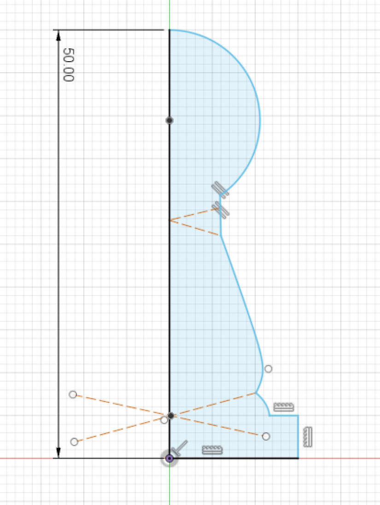
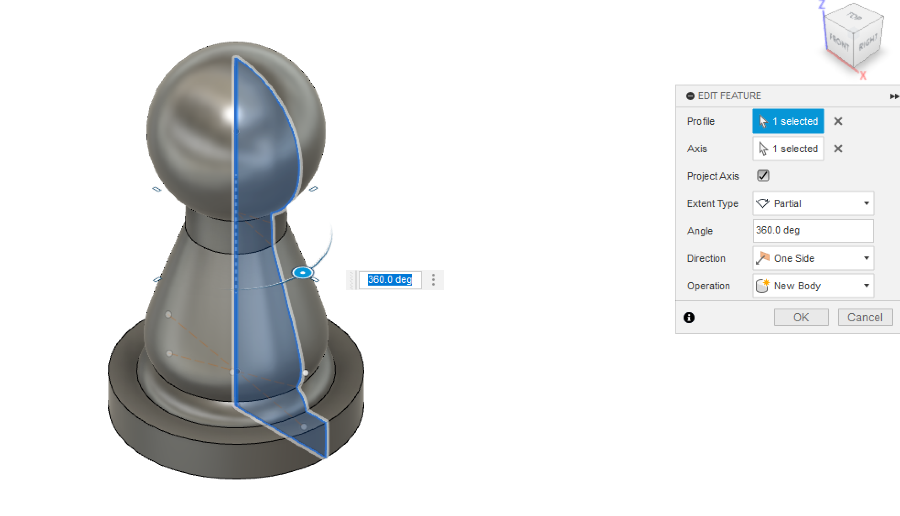
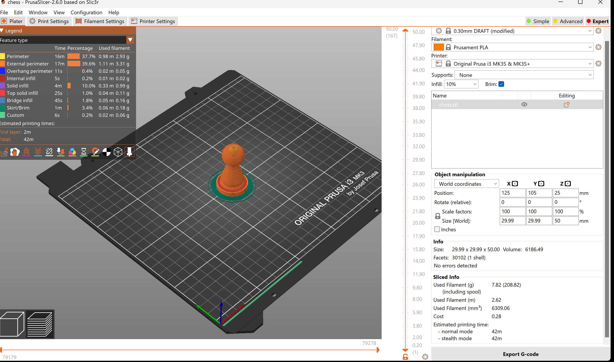
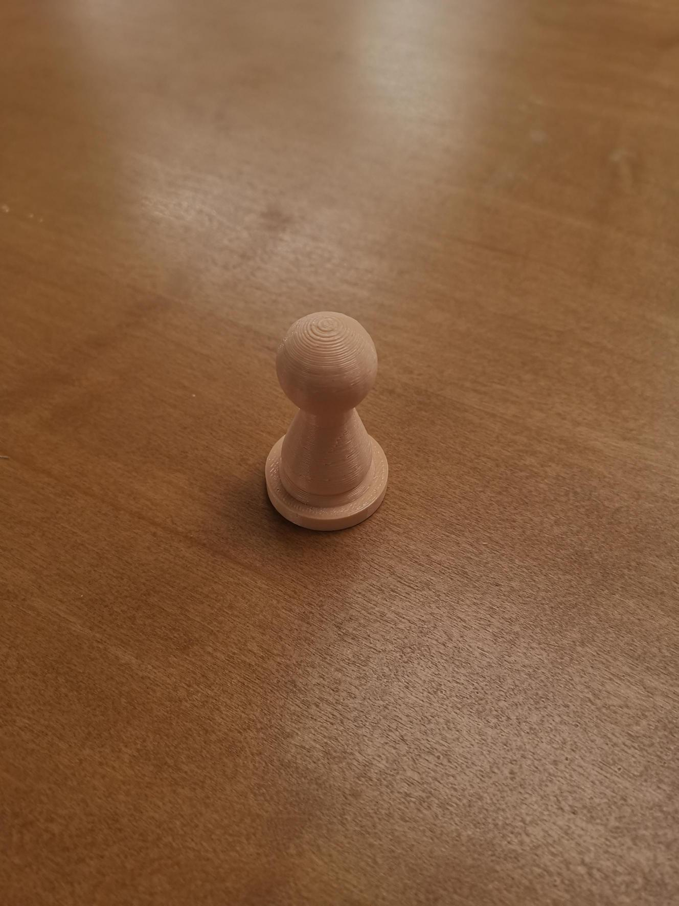
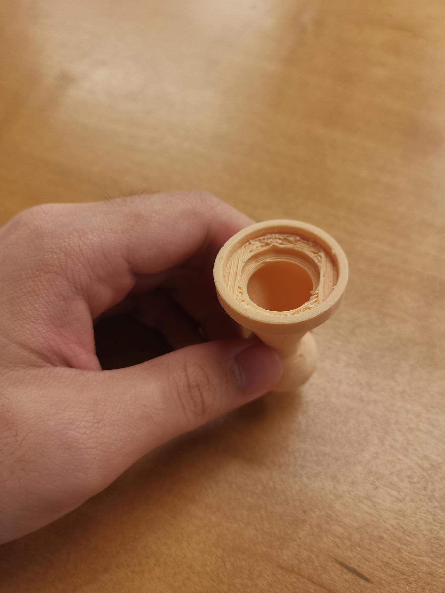
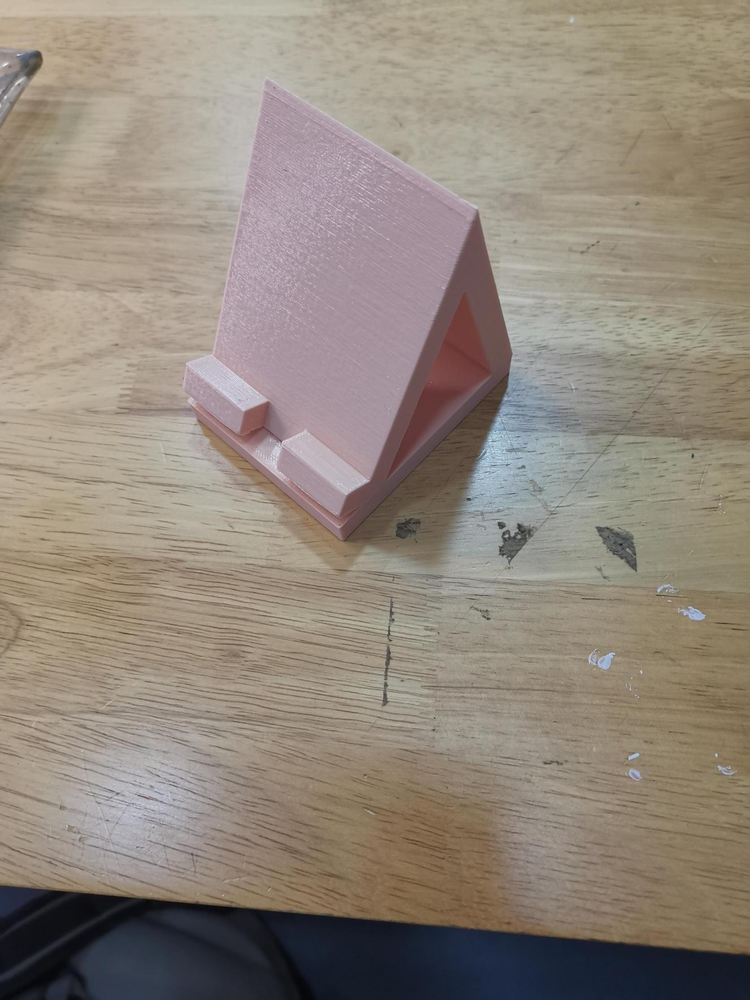
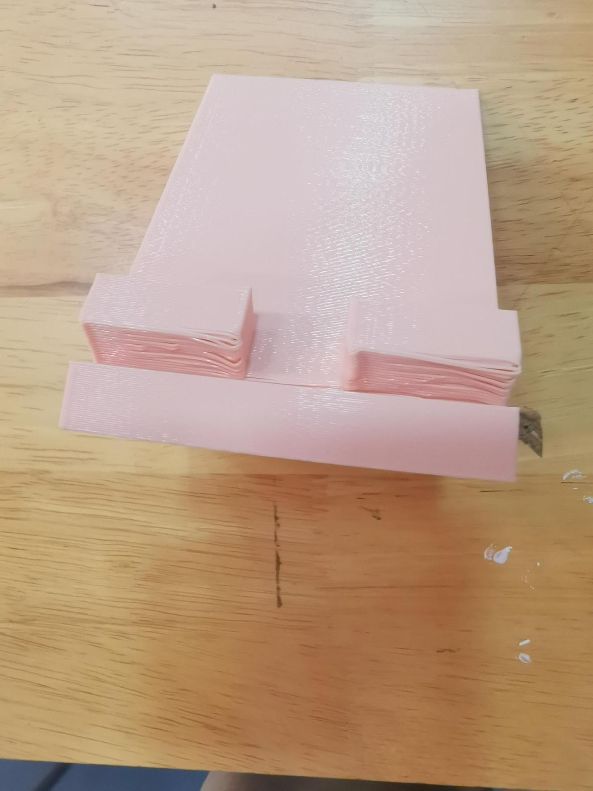

Once you had created the chess piece made in fusion 360 ,put the file in a 3d-printer software, I will be using PrusaSlicer.(exercise 12)

Make sure to change the setting and do some research on what each setting do, in my case due to how tight my schdule was it was set to the fastest.
In turn the quality of the print degrade.


Creating phone holder require the same step (fusion 360 model, 3d printer sofeware (stl file), slice, export and print)
That is my fusion 360 model


That is all for this lesson.